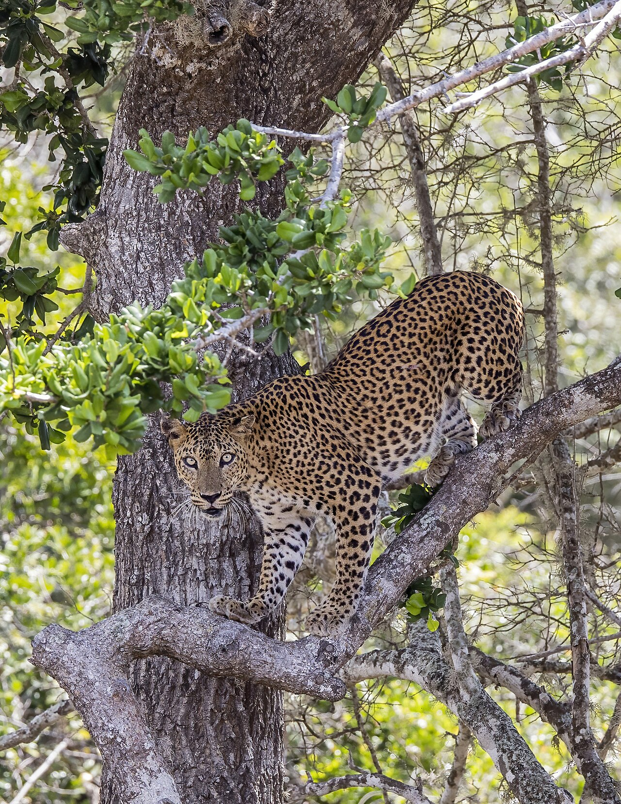

Sri Lanka Highlights
Explore authentic Sri Lankan destinations personally guided by Traumurlaub Lanka. Every photograph represents its real verified location.
 Cultural Triangle
Cultural Triangle
Sigiriya
The legendary 5th-century ancient citadel of King Kashyapa, rising 200 meters above the central jungle with ancient frescoes and landscaped royal water gardens.
 Hill Country
Hill Country
Ella
A serene mountain village celebrated for the architectural wonder of Nine Arch Bridge, misty tea estates, Little Adam's Peak hikes, and cascading waterfalls.
 Royal Heritage
Royal Heritage
Kandy
The sacred hill capital home to the Temple of the Sacred Tooth Relic (Sri Dalada Maligawa), tranquil Kandy Lake, and the lush Royal Botanical Gardens in Peradeniya.
 Southern Coast
Southern Coast
Galle
Walk through living history inside the 16th-century Galle Dutch Fort, marvel at the iconic lighthouse by the Indian Ocean, and explore cobblestone boutique streets.

Wildlife SafariYala National Park
Sri Lanka's premier wildlife sanctuary boasting one of the world's highest concentrations of leopards, wild elephant herds, sloth bears, and exotic birds.
 Beach & Whales
Beach & Whales
Mirissa
Golden crescent beaches, scenic Coconut Tree Hill, turquoise waves, and world-class blue whale watching expeditions in the deep southern waters.